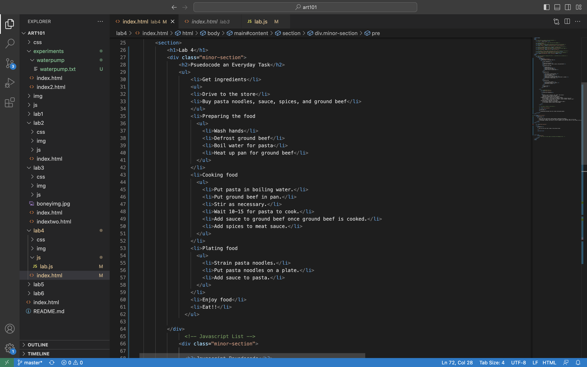
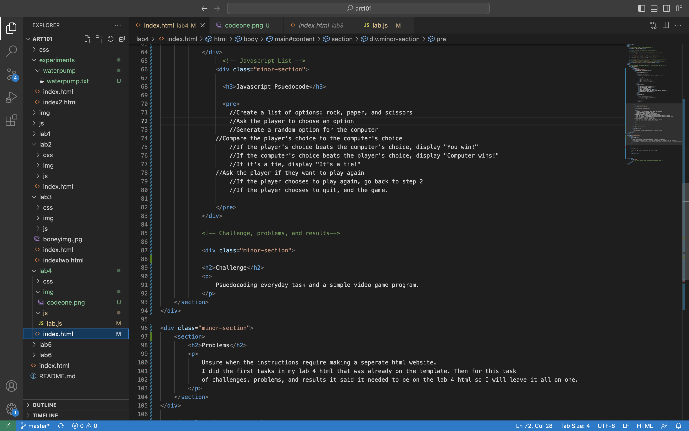

Lab 4
Psuedocode an Everyday Task
- Get ingredients
- Drive to the store
- Buy pasta noodles, sauce, spices, and ground beef
- Preparing the food
- Wash hands
- Defrost ground beef
- Boil water for pasta
- Heat up pan for ground beef
- Cooking food
- Put pasta in boiling water.
- Put ground beef in pan.
- Stir as necessary.
- Wait 10-15 for pasta to cook.
- Add sauce to ground beef once ground beef is cooked.
- Add spices to meat sauce.
- Plating food
- Strain pasta noodles.
- Put pasta noodles on a plate.
- Add sauce to pasta.
- Enjoy food
- Eat!!
Javascript Psuedocode
//Create a list of options: rock, paper, and scissors //Ask the player to choose an option //Generate a random option for the computer //Compare the player's choice to the computer's choice //If the player's choice beats the computer's choice, display "You win!" //If the computer's choice beats the player's choice, display "Computer wins!" //If it's a tie, display "It's a tie!" //Ask the player if they want to play again //If the player chooses to play again, go back to step 2 //If the player chooses to quit, end the game.
Challenge
Psuedocoding everyday task and a simple video game program.
Problems
Unsure when the instructions require making a seperate html website. I did the first tasks in my lab 4 html that was already on the template. Then for this task of challenges, problems, and results it said it needed to be on the lab 4 html so I will leave it all on one.
Results
Here is the code for the lists that I made in the previous tasks.
 